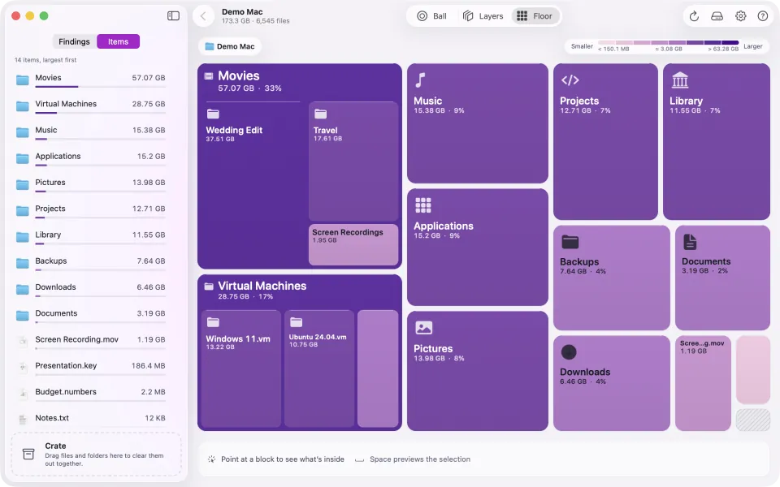
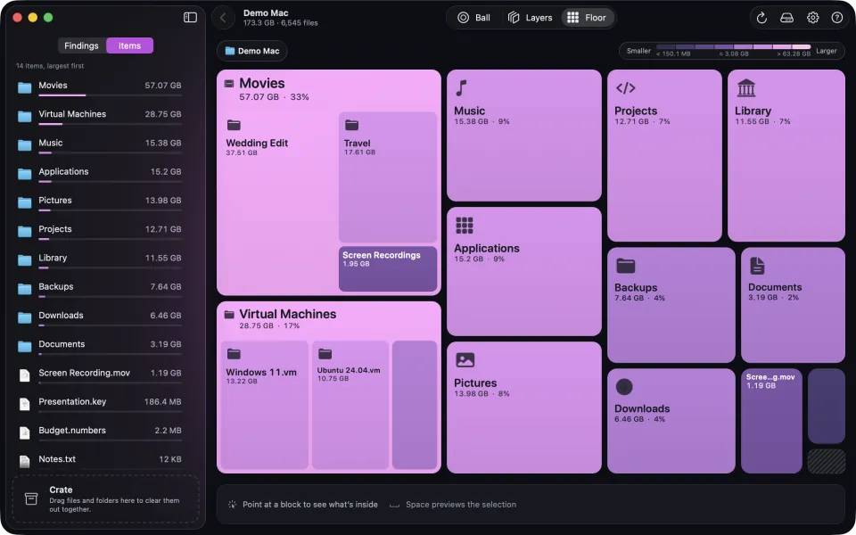
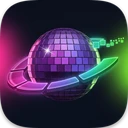

The Ball, coloured by size with the Traffic theme: green is small, red is big. Every screenshot here is the real app scanning a made-up demo folder.
How it works
From full disk to a clear answer
Three steps, and the whole drive is in front of you.
Pick a drive or folder
Your startup disk is one click away. Any other drive works too, or a folder from ⌘O, or one dropped on the window.
Watch the scan count up
The scanner runs in parallel and shows live totals. You can stop early and browse what it has measured so far.
Explore, then clear out
Open the biggest folders, preview files, and collect what you don't need in the Crate.
Findings and the Crate
Clear space without the guesswork
Discotech points out what's usually safe to clear and says why.
Findings
Findings: space that comes back on its own
Findings spots rebuildable developer output, such as node_modules, Python environments and Rust, Swift, Xcode and Gradle build folders, sitting next to the project file that recreates them. It also lists well-known caches in your home folder, and a few bigger things worth a look before you clear them.
Open a finding to see its items in a Finder-style list, with where each one lives and its size. Add one, or all of them, to the Crate.
One finding opened: every item with its location and size.
The Crate
Drag files and folders into the Crate as you explore. It totals the space you'll get back.
Review the Crate (⌘⌫) to see everything in one window. Take out what you want to keep.
Confirm once more. Items in system or app-data folders are flagged, and you're asked about each one on its own.
Everything goes to the Trash, never straight to deletion. Change your mind until you empty it.
Return never confirms a move.
Safety stoppers
Two checks keep the wrong thing out of the Trash. The first runs when you add an item. macOS system folders, disk roots, and anything locked or protected by System Integrity Protection can never go in the Crate. Folders like your home folder, Documents, Downloads and Applications stay too, though what is inside them can go. If you try, Discotech tells you why.
The second runs right before anything moves. Discotech checks that each item is still exactly what it scanned: the same file, the same size, no folder swapped for a link. If anything changed, it refuses and asks you to rescan.
Honest totals
A hard link is a second name for the same file. Discotech counts that file once, and the Crate counts its space as freed only when every name goes to the Trash.
Scan a whole disk and the total adds up to its full capacity. Besides your files you see Free (space you can use now), Purgeable (counted as used, but macOS can clear it when it needs room) and Unseen (used space that no file explains).
Where macOS reports them, Unseen is split into swap, Recovery, update staging and local snapshots. Discotech only lists snapshots. It never deletes them.
Views
Three ways to read one scan
Switch any time with the shortcut beside each name. The folder you're in, your selection and the Crate carry over, so you never lose your place.
Ball · ⌘1
Ball: the whole folder at once
The folder you're in sits at the centre of the disco ball. What's inside spreads outward, ring by ring, up to six levels deep. Labels follow the curve.
Point at anything to light up its path to the centre
A card shows its size and its share of each folder above it
Click a segment to go in, click the centre to step back out
Or scroll: up to open the folder under the pointer, down to go back. The Floor does this too
Zoomed into Movies, pointing at Iceland.
Layers · ⌘2
Layers: every level to true scale
Columns read left to right. Each one splits the column before it in exact proportion, so up to four levels sit side by side at the same scale.
A folder that is almost all one subfolder folds into a single labelled band
Hundreds of tiny items merge into one "smaller items" band
Click a band to go in, click the spine to come back out
The same demo folder in Layers.
Floor · ⌘3
Floor: one block per folder
Rounded blocks, largest first, filling the window at any size. A block's area grows more slowly than its size, so one giant folder can't crowd out the rest. Labels still show the true size and share.
Large folders show their own largest items inside
Click a block to go in, click an empty spot to come back out
Heat theme: cold blue is small, hot red is big.
Space Quick Look
Show in Finder
Copy Path
⌘↑ Enclosing folder
⌘R Scan again
⌘? Help
Full keyboard control in the list
Colour
Colour that tells you something
Every view and the sidebar share one colour key, shown above the chart. Change it in Settings (⌘,) and everything redraws at once, with no rescan.


Gradient · Studio · SizeOne colour family. Lighter is smaller, stronger is bigger.
Multicolour · Traffic · SizeGreen is small, yellow and orange are in between, red is big.
Multicolour · Clear · Kind of contentThe key above the chart names each kind.
Colour by
Size Default
Small items are calm, big items are loud.
Kind of content
Apps, media, documents, code, caches and so on each keep one colour everywhere.
Top-level folder
Everything inside a top-level folder shares its colour, even when you zoom in.
Themes and palette style
Pick a palette style, then one of its six themes.
Gradient
Studio, Neon, Iridescent, Ocean, Sunset and Forest.
Multicolour
Several hues in a row, easy to tell apart at a glance: Traffic, Heat, Terrain, Spectrum, Aurora, and Clear, which is colour-blind safe.
Gradient is the default. Not sure what a colour means? The Help centre shows the key for your current setting.
Settings: palette style, theme, and what colour means.
Privacy
Your file list never leaves memory
A map of your disk says a lot about you. Discotech treats it that way.
Scans are never savedThere's no scan history, and nothing is cached: a saved map of your files could expose them. Quit, and the results are gone.
The app has no account, analytics or networkNo sign-in and no tracking. The app contains no networking code. The source is open, so you can check.
Remembers settings, not filesIt keeps your view, theme, colour setting and window layout.
Full Disk Access is your callWithout it, macOS keeps Mail, Messages, Safari and other protected folders out of every scan, and that space shows up as Unseen. Turn it on for complete totals.
This website counts page viewsThe site uses Cloudflare Web Analytics, which sets no cookies and collects no personal data. The app is separate.

Download
Get Discotech for your Mac
The button downloads Discotech-macOS.dmg from the latest release. Open it and drag Discotech into Applications.
Discotech is ad-hoc signed and not yet notarized by Apple, because the project doesn't have a paid Apple Developer certificate. So macOS blocks the first launch of a downloaded copy. Pick either option below. Both affect only Discotech and change nothing else on your Mac.
Option A
No Terminal: use Privacy & Security
Open Discotech from Applications. macOS says it can't check the app; click Done.
Open System Settings › Privacy & Security and scroll down to the Security section.
Click Open Anyway next to the message that Discotech was blocked.
Confirm with Touch ID or your password, then click Open.
Open Anyway appears for about an hour after the blocked attempt. On macOS 14 you can also Control-click the app and choose Open; macOS 15 removed that shortcut.
Open Discotech as usual. From then on it opens like any other app.
The command removes the "downloaded from the internet" flag. It doesn't turn off Gatekeeper.
Want to check first? Read the source, or compare your download with the Discotech-macOS.dmg line in checksums.txt from the same release:
shasum -a 256 ~/Downloads/Discotech-macOS.dmg
Or build it yourself from the repository with ./build.sh.
Open source
Free, open, and yours to improve
Discotech is released under the MIT License. Use it, study it, fork it, or help make it better. It's native Swift, SwiftUI and AppKit, with no third-party dependencies.
Report what's off
A number that doesn't add up, a folder that looks wrong, a view that breaks at some window size. Open an issue.
Teach Findings a rule
Each rule is one entry in Model/Findings.swift: a folder name, the file that proves it's rebuildable, and a one-line reason.
Polish a view
Colours, spacing and motion come from one token file, so changes stay consistent. Start with CONTRIBUTING.md.